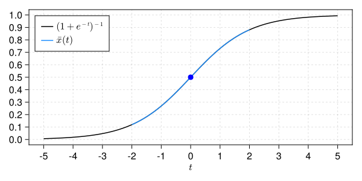

Initial value problem of the logistic equation
In this example, we will prove the existence of a solution of the logistic equation
\[\begin{cases} \displaystyle \frac{d}{dt} u(t) = f(u(t)) := u(t)(1 - u(t)),\\ u(0) = 1/2. \end{cases}\]
Let $\nu > 0$,
\[X := \left\{ \{ x_\alpha \}_{\alpha \ge 0} \in \mathbb{R}^{\mathbb{N} \cup \{0\}} \, : \, | x |_X := \sum_{\alpha \ge 0} |x_\alpha| \nu^\alpha < +\infty \right\}\]
and $* : X \times X \to X$ be the Cauchy product given by
\[x * y := \left\{ \sum_{\beta = 0}^\alpha x_{\alpha - \beta} y_\beta \right\}_{\alpha \ge 0}, \qquad \text{for all } x, y \in X.\]
For any sequence $x \in X$, the Taylor series $\sum_{\alpha \ge 0} x_\alpha t^\alpha$ defines an analytic function in $C^\omega([-\nu, \nu], \mathbb{R})$; while the Cauchy product $*$ corresponds to the product of Taylor series in sequence space.
The Banach space $X$ is a suitable space to represent a solution of the logistic equation. Indeed, it is a standard result from ODE theory that analytic vector fields yield analytic solutions.[1]
It follows that the sequence of coefficients of a Taylor series solving the initial value problem is a zero of the mapping $F : X \to X$ given component-wise by
\[( F(x) )_\alpha := \begin{cases} x_0 - 1/2, & \alpha = 0,\\ \alpha x_\alpha - (x*(1 - x))_{\alpha-1}, & \alpha \ge 1. \end{cases}\]
The mapping $F$ and its Fréchet derivative, denoted $DF$, may be implemented as follows:
using RadiiPolynomial
function F!(F, x)
F[0] = x[0] - 0.5
v = differentiate(x) - x*(1 - x)
for α ∈ 1:order(F)
F[α] = v[α-1]
end
return F
end
function DF!(DF, x)
DF .= 0
DF[0,0] = 1
DF[1:end,:] .= Derivative(1) - project(Multiplication(1 - 2x), domain(DF), Taylor(order(codomain(DF))-1))
return DF
endConsider the fixed-point operator $T : X \to X$ defined by
\[T(x) := x - A F(x),\]
where $A : X \to X$ is an injective operator corresponding to an approximation of $DF(\bar{x})^{-1}$ for some numerical zero $\bar{x} \in X$ of $F$.
Given an initial guess, the numerical zero $\bar{x}$ of $F$ may be obtained by Newton's method:
n = 27
x̄ = Sequence(Taylor(n), zeros(n+1))
x̄, success = newton!((F, DF, x) -> (F!(F, x), DF!(DF, x)), x̄)Newton's method: Inf-norm, tol = 1.0e-12, maxiter = 15
iteration |F(x)|
-------------------------------------
0 5.0000e-01 |DF(x)\F(x)| = 5.0000e-01
1 5.0000e-01 |DF(x)\F(x)| = 2.5000e-01
2 1.2500e-01 |DF(x)\F(x)| = 3.1250e-02
3 1.7578e-03 |DF(x)\F(x)| = 1.9187e-04
4 8.1306e-08 |DF(x)\F(x)| = 4.2857e-09
5 4.2352e-22Let $R > 0$. Since $T \in C^2(X, X)$ we may use the second-order Radii Polynomial Theorem with $C^2$ condition such that we need to estimate $|T(\bar{x}) - \bar{x}|_X$, $|DT(\bar{x})|_{\mathscr{B}(X, X)}$ and $\sup_{x \in \text{cl}( B_R(\bar{x}) )} |D^2T(x)|_{\mathscr{B}(X^2, X)}$.
To this end, consider the truncation operator
\[(\pi^n x)_\alpha := \begin{cases} x_\alpha, & \alpha \le n,\\ 0, & \alpha > n, \end{cases} \qquad \text{for all } x \in X,\]
as well as the complementary operator $\pi^{\infty(n)} := I - \pi^n$.
Thus, we have
\[\begin{aligned} |T(\bar{x}) - \bar{x}|_X &\le |\pi^n A \pi^n F(\bar{x})|_X + \frac{1}{n+1} |\pi^{\infty(n)} F(\bar{x})|_X,\\ |DT(\bar{x})|_{\mathscr{B}(X, X)} &\le |\pi^n A \pi^n DF(\bar{x}) \pi^n - \pi^n|_{\mathscr{B}(X, X)} + \frac{\nu}{n+1} |2\bar{x} - 1|_X,\\ \sup_{x \in \text{cl}( B_R(\bar{x}) )} |D^2T(x)|_{\mathscr{B}(X^2, X)} &\le 2 \nu \left( |\pi^n A \pi^n|_{\mathscr{B}(X, X)} + \frac{1}{n+1} \right). \end{aligned}\]
In particular, from the latter estimate, we may freely choose $R = \infty$.
The computer-assisted proof may be implemented as follows:
ν = Interval(2.0)
X = ℓ¹(GeometricWeight(ν))
R = Inf
x̄_interval = Interval.(x̄)
F_interval = Sequence(Taylor(2n+1), similar(coefficients(x̄_interval), 2n+2))
F!(F_interval, x̄_interval)
tail_F_interval = copy(F_interval)
tail_F_interval[0:n] .= Interval(0.0)
DF_interval = LinearOperator(Taylor(n), Taylor(n), similar(coefficients(x̄_interval), n+1, n+1))
DF!(DF_interval, x̄_interval)
A = inv(mid.(DF_interval))
bound_tail_A = inv(Interval(n+1))
# computation of the bounds
Y = norm(A * F_interval, X) + bound_tail_A * norm(tail_F_interval, X)
Z₁ = opnorm(A * DF_interval - I, X) + bound_tail_A * ν * norm(2x̄_interval - 1, X)
Z₂ = 2ν * (opnorm(Interval.(A), X) + bound_tail_A)
showfull(interval_of_existence(Y, Z₁, Z₂, R, C²Condition()))Interval(2.407124940184958e-6, 0.06419613744065542)The following figure[2] shows the numerical approximation of the proven solution in the interval $[-2, 2]$ along with the theoretical solution $t \mapsto (1 + e^{-t})^{-1}$.

- 1A. Hungria, J.-P. Lessard and J. D. Mireles James, Rigorous numerics for analytic solutions of differential equations: the radii polynomial approach, Mathematics of Computation, 85 (2016), 1427-1459.
- 2S. Danisch and J. Krumbiegel, Makie.jl: Flexible high-performance data visualization for Julia, Journal of Open Source Software, 6 (2021), 3349.